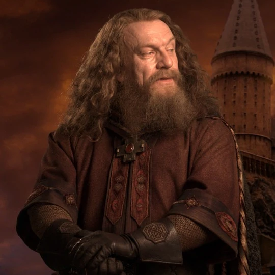
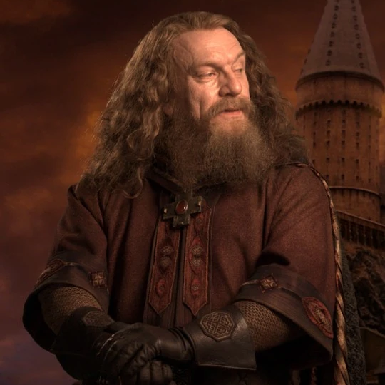
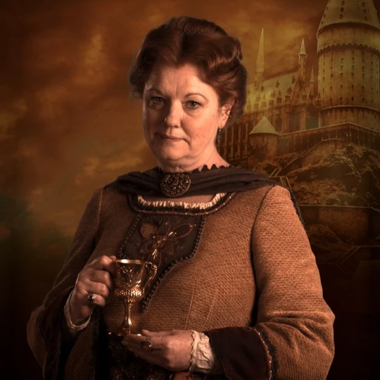
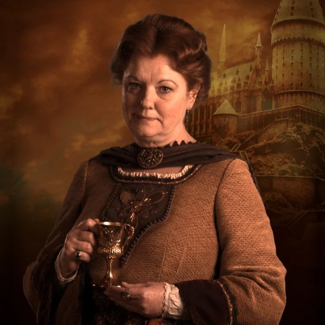
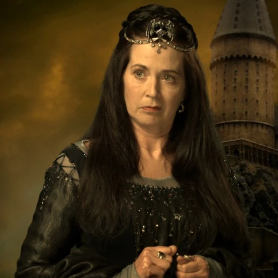
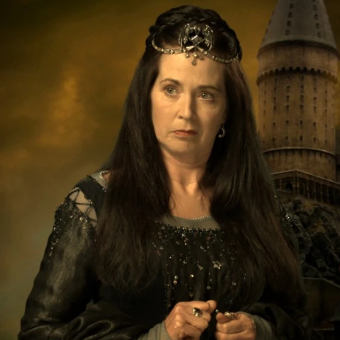
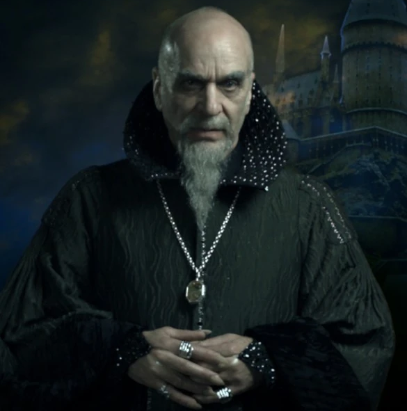
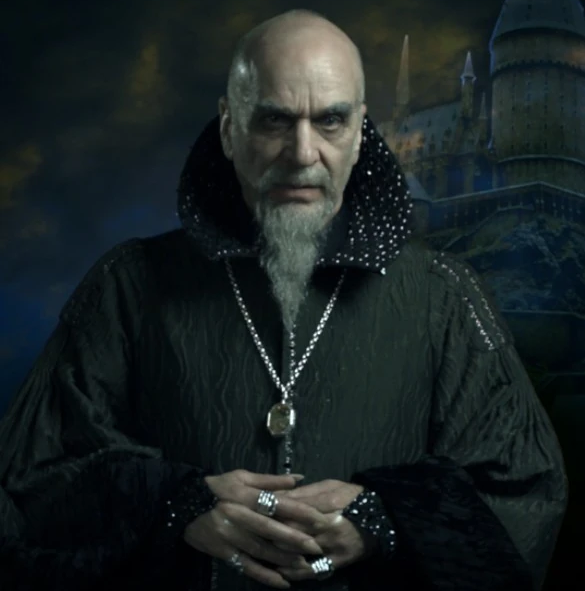

Gryffindor was one of the four Houses of Hogwarts School of Witchcraft and Wizardry and was founded by Godric Gryffindor. Gryffindor instructed the Sorting Hat to choose students possessing characteristics he most valued, such as courage, chivalry, nerve and determination,to be sorted into his house.
Godric Gryffindor was a wizard and one of the four founders of Hogwarts School of Witchcraft and Wizardry. He was great friends with Salazar Slytherin but opposed him when he later thought that they should not accept Muggle-born students at Hogwarts. It is unknown when he died. Gryffindor's birthplace became known as Godric's Hollow, in his honour. Godric Gryffindor's portrait still remains at Hogwarts.
Hufflepuff was one of the four Houses of Hogwarts School of Witchcraft and Wizardry. Its founder was the medieval witch Helga Hufflepuff. Hufflepuff was the most inclusive among the four houses, valuing hard work, dedication, patience, loyalty, and fair play rather than a particular aptitude in its members.
Helga Hufflepuff (fl. c. 993) was a Welsh witch and was one of the four founders of Hogwarts School of Witchcraft and Wizardry. While the other founders chose to have special students, she accepted them all without preference, although she did want them to be loyal and hard-working. Helga's portrait remained at Hogwarts by at least the 1980s.
"Those patient Hufflepuffs are true and unafraid of toil"
Ravenclaw was one of the four Houses of Hogwarts School of Witchcraft and Wizardry. Its founder was the medieval witch Rowena Ravenclaw. Members of this house were characterised by their wit, learning, and wisdom. The emblematic animal symbol was an eagle, and blue and bronze were its colours. The Head of Ravenclaw was Filius Flitwick, and the House ghost was the Grey Lady, real name Helena Ravenclaw, daughter of Rowena.
Rowena Ravenclaw (fl. c. 993) was a Scottish witch and one of the four founders of Hogwarts School of Witchcraft and Wizardry. She was noted for her intelligence and creativity. Ravenclaw died sometime in the eleventh century, after she fell fatally ill. Legend had it that a broken heart was the cause — because her daughter Helena ran away with her diadem. Rowena's portrait remained at Hogwarts.
Slytherin was one of the four Houses at Hogwarts School of Witchcraft and Wizardry, founded by Salazar Slytherin. In establishing the house, Salazar instructed the Sorting Hat to pick students who had a few particular characteristics he most valued. Those characteristics included cunning, resourcefulness, leadership, and ambition.
Salazar Slytherin (fl. c. 993) was a pure-blood wizard, noted for his cunning and determination. He was regarded as one of the greatest wizards of the age, regarded for his abilities as a Parselmouth and as a skilled Legilimens. Slytherin was one of the four founders of Hogwarts School of Witchcraft and Wizardry along with Godric Gryffindor, Helga Hufflepuff, and Rowena Ravenclaw. He was also the namesake of Slytherin House.
"Slytherin will help you on your way to greatness"
 

 

 

 
